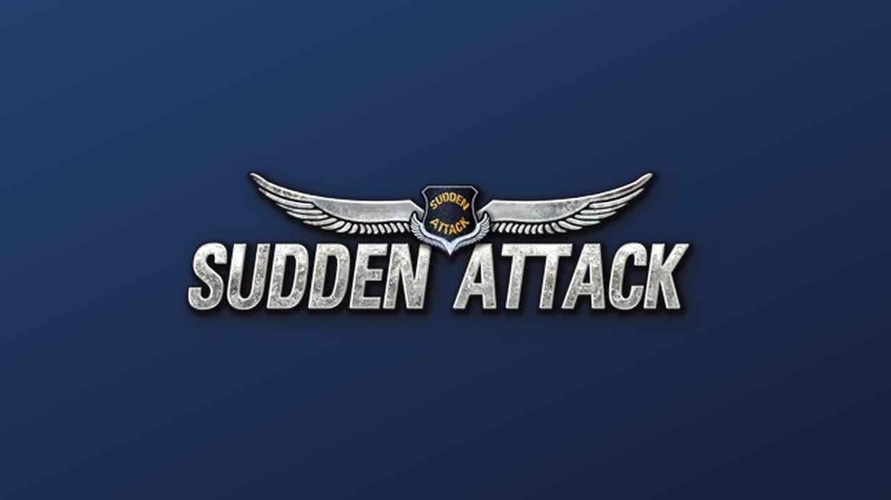

기준일 2026년 11월 15일 (일)커버기간: 11/14(토) 오전 – 11/15(일) 오전스팀·웹 07시대까지 수집
핵심워독스 미니건 헬기 글 답글이 121개로 늘며 시즌 3 나흘째 탈것 균형 논쟁이 커지고 있습니다.제재에이펙스가 컨트롤러 부정행위 탐지를 전 기종에 적용했습니다.11월 12일 이후 영구 정지됐다며 억울함을 호소하는 글이 나왔습니다.국내오버워치 2-2-2 역할 고정 6대6 경쟁전이 4주 동안 열립니다.인벤에서는 55와 66 선호를 묻는 글에 댓글 40개가 달렸습니다.방법07시대 내장 브라우저로 스팀·인벤·루리웹을 열었습니다.워독스 'Just now'와 오버워치 게시판 03:46 글로 당일임을 확인했습니다.
신선도스팀·인벤·루리웹은 데스크톱 내장 브라우저로 07시대에 열었습니다.워독스 토론 맨 위 글에는 Just now 시각이 찍혀 있었습니다.인벤 오버워치 목록의 최신 글은 03:46에 올라왔습니다.
근거 표기KR·기사국내 매체글로벌·기사해외 매체커뮤니티원문 직접 확인공식공식 공지지표수치국내 반응 미확인국내 소스 미확인
게임
이벤트 / 업데이트
날짜
유형
커뮤니티 반응 · 관전 포인트
오버워치26대6 역할 고정 경쟁전
블리자드가 11/11에 시즌 6 계획을 공지했습니다.첫날부터 4주 동안 2-2-2 역할 고정 6대6 경쟁전이 열립니다.자유 방식도 남고, 두 모드 모두 밸런스 패치를 받습니다.시즌 6은 12월이고 정확한 날짜는 아직 밝히지 않았습니다.
11/11시즌 6 첫날부터
모드 · 국내 반응
커뮤니티지표글로벌·기사① 55 대 66"여기 애들은 55 vs 66 뭐 선호?"에 댓글 40개가 달렸습니다.전날 판의 28개에서 늘었고 438회 읽혔습니다.② 역할 고정 반감 최근 50건 중 모드 논쟁 제목 4건에 답글 55개가 몰렸습니다."역고 때문에 겜 수준"에는 의견이 12개 붙었습니다.③ 공식 설명 루리웹 디렉터 관점 번역글은 1,123회 열람됐습니다.그런데 의견을 남긴 사람은 한 명도 없었습니다.시험 모드는 기간과 종료 뒤 판단 기준을 먼저 밝혀야 논쟁이 줄어듭니다.인벤 55 vs 66 글 · 루리웹 디렉터의 관점 · PC Gamer

서든어택커스텀 에임 · 콤보패스
조준점 형태·선 길이·두께·간격·색상·투명도를 바꿀 수 있습니다.사격 때 벌어짐을 직접 정하거나 고정형으로 둘 수도 있습니다.설정 값은 계정에 저장돼 다른 PC에서도 그대로 쓰입니다.콤보패스 시즌4 2차는 12/10까지 이어집니다.
11/12기사 공개
기능 · 패스
KR·기사공식국내 반응 미확인① 커스텀 에임 게임메카가 11/12 기사로 조준점 조정 기능을 소개했습니다.외곽선과 중앙점을 넣고 밝기별 배경으로 미리 볼 수 있습니다.② 콤보패스 시즌4 2차 보상에는 "G600(MG) Speed 영구제"가 들어 있습니다.'브레드의 선택' 예측 이벤트는 11/26까지 열립니다.③ 미확인 인벤·루리웹·아카라이브 반응은 오늘 확인하지 못했습니다.스팀에도 등록되지 않아 그쪽 수치는 볼 수 없습니다.조준점 설정을 열어 줄 때는 기본값 복귀 버튼 위치도 함께 알려야 합니다.게임메카
04
글로벌 포커스
근거는 스팀 커뮤니티 토론·리뷰 원문과 SiegeGG·Dot Esports·Liquipedia 등 전문지, 그리고 공식 패치노트입니다.
오늘 연 해외 커뮤니티확인워독스고정글 뺀 47건 · Just now~2시간 전 · 활성 주제 1,911건확인마블 라이벌즈고정글 뺀 45건 · Just now부터 · 활성 주제 490건확인배틀필드 6고정글 뺀 47건 · Just now~9시간 전 · 활성 주제 1,475건확인에이펙스 레전드고정글 뺀 46건 · 2분 전부터 · 활성 주제 495건확인스팀 상점: 워독스·DERELIKT·KUROSHIO 당일 값매체만에이펙스 탐지 강화 · BF6 무료 체험: 해외 기사미열람CS2 · 레인보우 식스 시즈 · 데스티니 2 · THE FINALS · 델타포스 토론축 없음발로란트와 서든어택은 스팀 미등록
게임
이벤트 / 업데이트
날짜
유형
커뮤니티 반응 · 관전 포인트
워독스 (WARDOGS)시즌 3 나흘째
시즌 3은 11/12 밤에 열려 나흘째를 맞았습니다.토론 활성 1,911건으로 전날보다 1건 줄었습니다.헬기·탈것을 다룬 제목 9건에 답글 169개가 달렸습니다.한국어 평가 2,800개 중 긍정은 37%입니다.
11/15활동 47건
시즌 · 토론
커뮤니티지표① 공중 화력 탈것을 다룬 제목 9건에 답글 169개가 몰렸습니다."Minigun-Helis"(미니건 헬기)는 전날 78개에서 121개로 늘었습니다.② 치트 대응 부정행위를 짚은 4건에도 94개가 달렸습니다.신고해도 그대로라는 하소연도 답글 20개를 받았습니다.③ 진행 피로 L2A6 해금에 325시간이 걸렸다는 토로가 올라왔습니다.개발진 말과 달리 노가다만 남았다는 지적도 18개 모였습니다.한 탈것에 불만이 쏠리면 조정 시점부터 짧게 알려야 합니다.워독스 토론 · 워독스 상점
마블 라이벌즈시즌 11 사흘째
시즌 11 둠스데이는 11/13에 열렸습니다.토론 활성 490건으로 전날보다 11건 늘었습니다.정지·신고를 다룬 제목 7건에 답글 57개가 달렸습니다.실행 오류를 호소한 4건도 40개 반응을 얻었습니다.
11/15활동 45건
시즌 · 토론
커뮤니티지표① 제재 항의 정지·신고 제목 7건에 답글 57개가 몰렸습니다.실력대로 했는데 트롤 처분을 받았다는 호소는 31개 답을 받았습니다.② 실행 오류 켜지지 않는다는 4건에 40개 반응이 모였습니다."performance is great"(성능이 좋다) 같은 호평도 보입니다.③ 인구 불안 1만 명만 돌아왔다는 걱정도 나왔습니다.이용자 주장일 뿐이며 동접 수치는 확인하지 않았습니다.제재 기간을 늘릴 땐 기준 변경을 패치노트에 따로 적어야 합니다.마블 라이벌즈 토론
에이펙스 레전드컨트롤러 탐지 강화
ApexRanked는 11/12 탐지 범위가 넓어졌다고 전했습니다.모든 모드와 PC·PS·Xbox·스위치2가 대상입니다.영구 정지까지 가능하다고 합니다.근거인 ApexLiveComms X 원문은 확인하지 못했습니다.
11/12ApexRanked
제재 · 토론
커뮤니티지표글로벌·기사① 오탐 호소 제재에 맞선 제목 5건에 답글 28개가 달렸습니다.공용 와이파이 접속만으로 영구 정지됐다는 사례도 있습니다.② 기종 형평 컨트롤러가 여전히 말이 안 된다는 제목에 41개가 붙었습니다.크로누스 작전 2단계를 외친 스레드도 16개를 모았습니다.③ 출처 유의 리스폰은 몇 달간 시험·검증했다고 전해졌습니다.다만 이 소식은 비공식 사이트 보도입니다.탐지 강화 직후엔 이의제기 창구를 같은 공지에 붙여야 합니다.에이펙스 토론 · ApexRanked
배틀필드 6무료 체험 주말
무료 체험은 11/13에 시작됐습니다.종료는 11/16 12:00 UTC 카운트다운 기준입니다.컨퀘스트·에스컬레이션·카지노 하이스트가 포함됩니다.체험 중 얻은 해금은 끝난 뒤에도 유지된다고 EA가 안내했습니다.
11/13~16EA 노트 기준
체험 · 토론
커뮤니티지표글로벌·기사① 무기 불만"VSS is a joke"(VSS는 장난)에 답글 155개가 달렸습니다.첫 페이지에서 가장 많은 반응을 모은 스레드입니다.② 접속 오류 한두 판 만에 튕긴다는 호소에 44개가 붙었습니다.무료 주말이 안 된다는 문의도 올라왔습니다.③ 이탈 조짐 스레드를 몇 개나 더 세워야 하냐는 항의에 63개가 쌓였습니다.플래닛사이드 2가 낫다며 떠날 뜻을 비친 이용자도 있습니다.무료 체험 땐 처음 보는 오류를 공식 안내로 묶어 둬야 합니다.배틀필드 6 토론 · Timesaver
05
신작 출시·발표
최근 나온 슈터와 곧 나올 슈터를 한 표에 모읍니다.
게임
상태
날짜
개발 · 배급
관심 신호
링크
워독스 시즌 3Sabatulo · Limited Mode
출시
11.1222~24시 점검 뒤 · 공식
BULKHEAD · Team17
한국어 2,800개 중 37% · 30일 73,240개, 71% · 미니건 헬기 답글 121개
무엇이워독스 시즌 3이 11월 12일 밤 열려 오늘 나흘째입니다."Minigun-Helis"(미니건 헬기) 글 답글이 121개로 늘었습니다.11월 13일 15개, 14일 78개에서 계속 불어났습니다.헬기·탈것 제목 9건에 달린 답글은 모두 169개입니다.대공 해금 방식을 묻는 "Approach to Anti-Air Progression | HELI"도 답글 26개를 모았습니다.
맥락조종사 쪽 반발도 함께 보입니다."Nerfing choppers was stupid"(헬기 하향은 바보짓) 글은 답글 5개입니다."325 hours of trucking to unlock L2A6"(L2A6 해금에 325시간) 글도 있습니다.치트 제목 4건에는 답글 94개가 달렸습니다.한국어 평가 2,800개 중 긍정은 37%로 사흘째 그대로입니다.
우리 운영 교훈
설정 탈것 조정 계획을 먼저 짧게 알려 두는 편이 낫습니다.
기록 미니건 헬기 글의 답글 수를 날마다 적어 둡니다.
지표 하루 증가 폭이 63개에서 43개로 계속 줄어드는지 봅니다.
MID · 정지 항의 답글 28개
컨트롤러 탐지 강화 뒤 영구 정지 항의가 나왔습니다
무엇이ApexRanked는 11월 12일 컨트롤러 부정행위 탐지 소식을 실었습니다.리스폰이 모든 모드와 PC·PS·Xbox·스위치2에 적용한다는 내용입니다.영구 정지까지 가능하며 몇 달 동안 시험·검증했다고 적었습니다.비공식 사이트이고 원 근거인 X 글은 확인하지 못했습니다.스팀 토론에서는 정지 항의 제목 5건에 답글 28개가 달렸습니다.
맥락에이펙스 스팀 토론에는 활성 글 495건이 있습니다.닉네임 때문에 5년 쓴 계정이 정지됐다는 호소는 답글 10개입니다.공용 와이파이 접속만으로 영구히 막혔다는 주장도 있습니다.입력 장치 불만을 담은 제목도 6건입니다."Glad to see controller is still a … non sense"(컨트롤러가 여전히 말이 안 된다)는 답글 41개를 받았습니다.
우리 운영 교훈
설정 단속 강화를 알릴 때 이의제기 경로를 함께 적습니다.
기록 오탐 주장 글 수를 탐지 업데이트 날짜와 나란히 남깁니다.
지표 정지 항의와 컨트롤러 불만을 나눠서 셉니다.
08
CM 액션 제안
1
시즌 초 불만 글의 답글 추이를 날마다 적습니다
시즌 초 불만 글은 답글 추이를 날마다 기록해 두는 것이 좋습니다.워독스 미니건 헬기 게시물은 15개, 78개, 121개로 사흘 만에 커졌습니다.둘째 날에 잡았다면 하루 먼저 움직일 수 있었습니다.이틀 연속 반응이 늘어난 글을 경보 목록에 올리면 됩니다.
2
제재 강화 공지에 이의제기 경로를 붙입니다
제재 강화를 알릴 때는 오탐 이의제기 경로를 같은 공지에 넣어야 합니다.에이펙스는 컨트롤러 부정행위 탐지를 모든 모드에 적용했습니다.그 뒤 스팀에는 억울하게 영구 차단됐다는 글이 올라왔습니다.항의 제목 5건에 답글 28개가 모인 만큼 경로 안내가 급합니다.
유의사항방법이번 판은 11/15 07시대에 데스크톱 내장 브라우저로 읽었습니다.스팀 수치는 토론 목록 첫 페이지에서 고정글을 뺀 값입니다.분류워독스 헬기·탈것은 제목 낱말로 셌습니다.어제 6건보다 넓게 수송기·리틀버드까지 넣어 9건입니다.일정IGDB 캐시는 11/14 09:20 갱신본입니다.상점 대조 2건은 어긋남이 없고 Overspray는 스팀 검색에 없었습니다.보도에이펙스 탐지 강화는 비공식 사이트 기사로만 확인했습니다.원 근거인 공식 X 글은 열지 못했습니다.인구마블 라이벌즈 이용자 감소는 토론 글의 주장입니다.스팀 동시접속 수치는 이번 판에서 재지 못했습니다.미열람아카라이브와 시즈, CS2, 델타포스 토론은 열지 않았습니다.